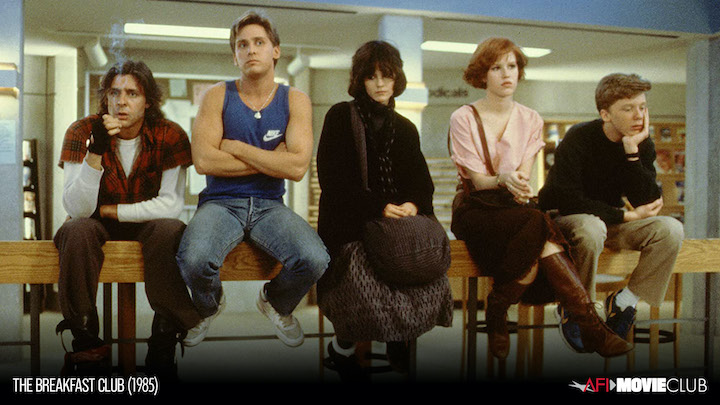
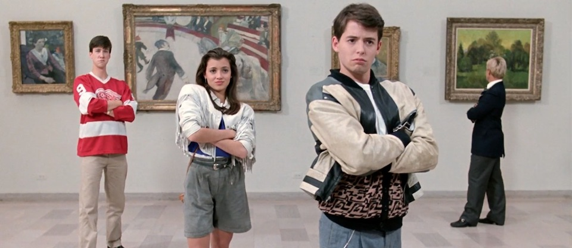

One of my favorite genres of movies all appear in the 80s! With amazing directors, actors, and storylines,these films really shine in this decade!
This 80s classic is my all time favoirte movie. It was realeased in 1985, by Director John Hughes, staring brat back members: Molly Ringwald as Claire (the princess), Emillio Estevez as Andrew (the athlete), Ally Sheedy as Alison (the basketcase), Anthony Michael Hall as Brian (the brain) and Judd Nelson as John Bender (the criminal.) This movie was a breakthrough in its time, truly showcasing the struggles of a teenager in high school. This group of kids met in detention and did everything from talking, to eating, to blasting music, and sorting out their differences.
Another 80s Classic, Direted By John Hughes, high school senior Ferris Bueller (Matthew Brodrick), decides to play hookey and take a day off from school (aka a fake sick day). He grabs his best friend (Alan Ruck) who is actually sick, and his girlfriend (Mia Sara) for a fun filled day downtown Chicago going to museums, hijacking parade floats, and driving a Ferrari around all day in 1986.
Based on the book written by S.E. Hinton, Francis Ford Coppla re-adapts this book into a lovable film taken place in 1965, yet made in 1983. The greaser group consisting of Ponyboy Curtis (C. Thomas Howell), Johnny Cade (Ralph Maccio), Dallas aka Dally Winston (Matt Dillon), Sodapop Curtis (Rob Lowe), Darry Curtis (Patrick Swayze), Steve (Tom Cruise), and Two-Bit Matthews (Emillio Esteves) was a unknown new cast at the time, but all actors we know know who are absolutley stellar. There is a class rivalry between the Soc's (the rich kids) and the greasers (the poor kids). Ponyboy and Johnny find themselvs in some trouble after a fight with the Soc's and the rest of the story unravels from there: a story of friendship, bravery, and loyalty to your friends.